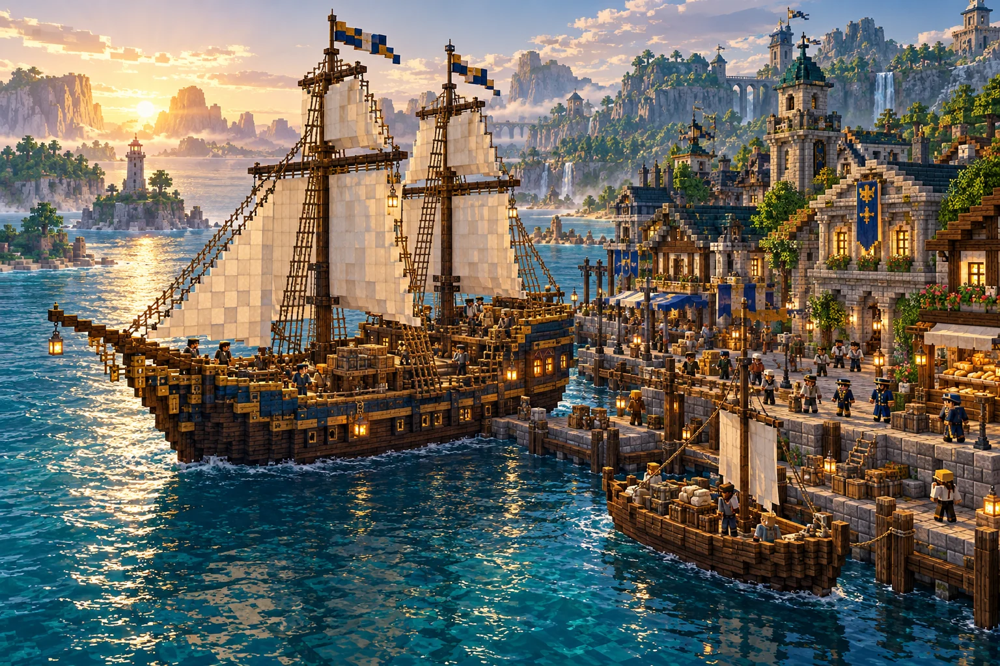
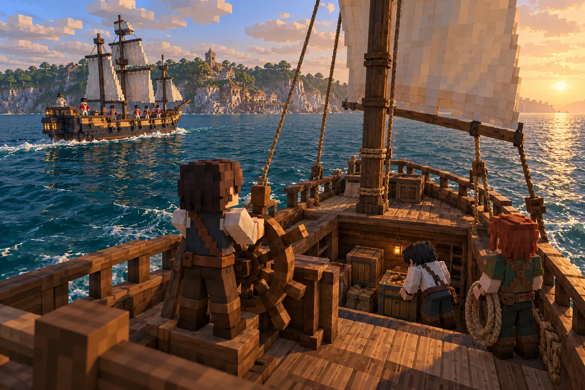
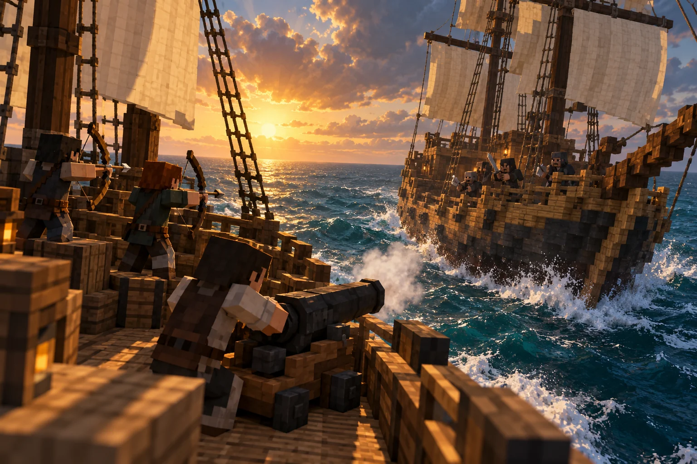
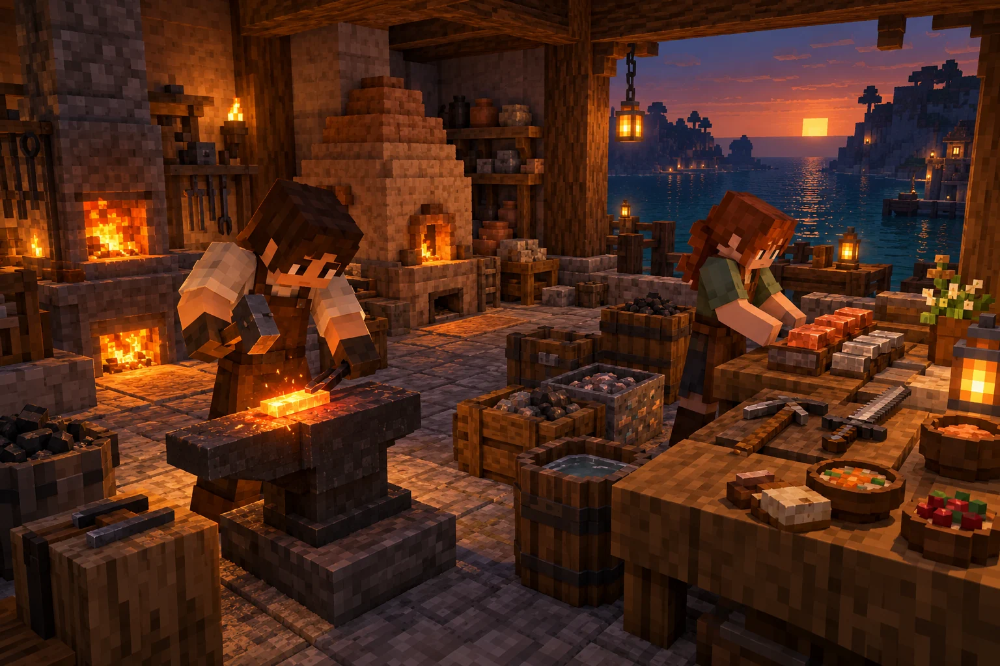
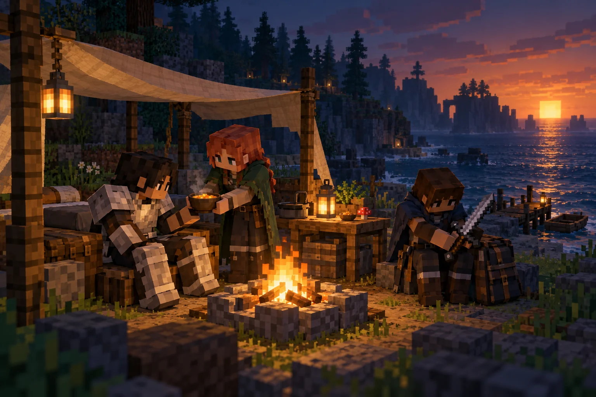
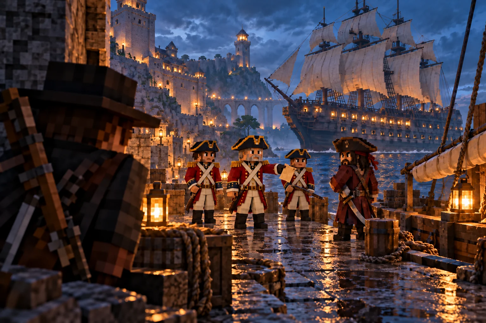
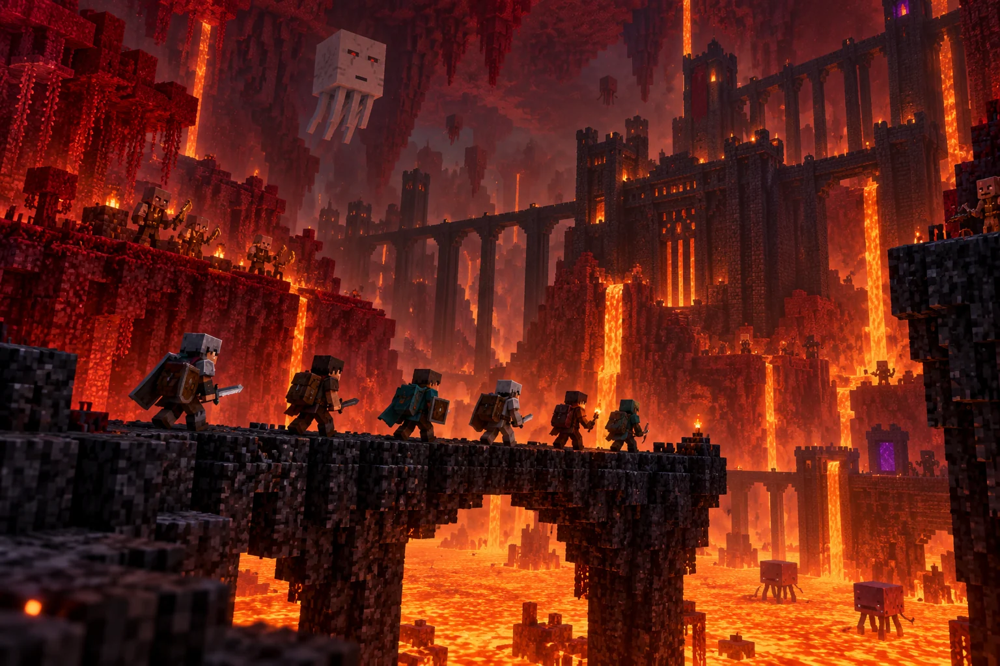
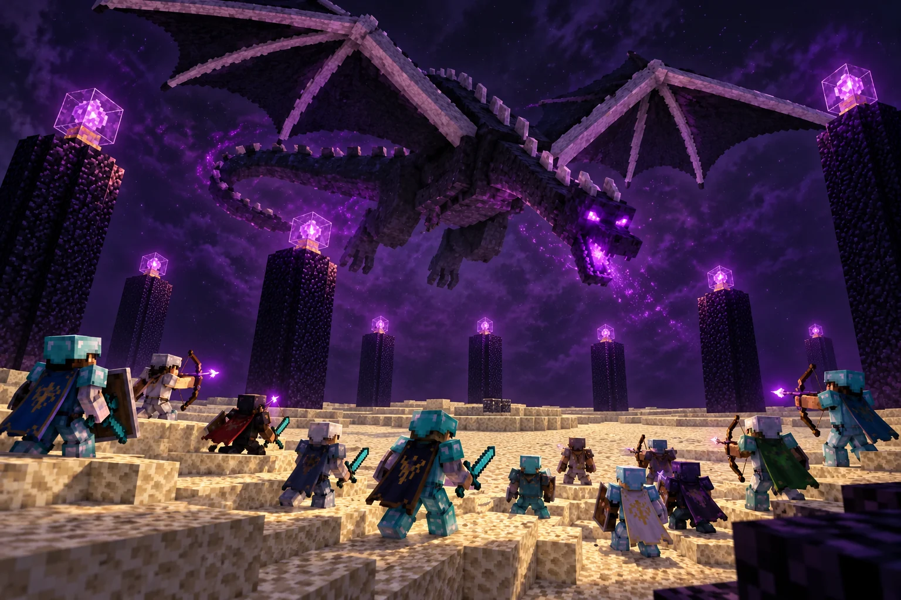

Easter Co. SMP
The Ultimate
Minecraft Experience
A survival server for veterans and beginners, with ships, bounties and weekly raids.
Use our custom launcher and client - connect to our server,
hosted & funded by Easter Company (Easter LTD).
Entirely operated by Husband and wife, Owen & Hannah Easter.
Life beyond the shoreline
A place to start.
A world to make your own.
Find your feet in a bustling port. Take your home to sea. Build a reputation worth defending—or a bounty worth chasing.

A small boat. A bigger horizon.
Your next home
could have sails.
Continents, islands, inland seas and sprawling oceans give every voyage somewhere to go. Sail improved small boats, carry more in a cargo boat, or bring a crew of ten or more aboard a massive warship or floating home.
Start in good company.
Spawn Island is your first port: shops, bankers, priests and naval officers, with a player hub for trading and meeting a crew. Players without wanted status enjoy PvP protection at spawn. Nearby land stays protected from building and mining, but PvP protection ends when you leave the spawn area.
Every crew needs more than swords.
Cook, bake, brew or gather supplies. New players can make themselves useful from day one, while veterans prepare for harder journeys. There is room to settle in and play casually, too.

Patrols, prizes & private property
Take the helm.
Make it yours.
Navy ships patrol Navy-controlled waters. Peaceful players and bounty hunters can count on their help in nearby combat. Pirates see a different opportunity: raid patrol ships for useful loot and capture vessels to expand their crew’s fleet.
Find your next prize.
NPC pirate pillagers sail a variety of other boat types, too. Any player can capture their ships. Secure the vessel, take the helm and open your inventory menu to inspect the ship’s cargo hold and its pilot controls.
Choose to claim the ship or scuttle it. Claiming requires a name: give your prize an identity before setting off as its registered owner.
Your friends need permission.
Piracy is still piracy. Sailing a ship that is not yours is a crime in Navy-controlled waters. Use the built-in party and crew system to group up with friends and sail each other’s ships legally.
A fleet is a crew effort. You can own one registered, named ship at a time; claiming another replaces your previous registration.
A name carries the law with it.
A named ship is registered with the Navy. Within Navy-controlled waters, theft, piracy and vandalism against a protected registered vessel are offences. The hull can still be griefed—the law provides consequences, not an invulnerable ship.

Bring firepower. Bring a crew.
Arm your ship.
Hold your deck.
A warship needs more than a captain. Equip it for the fight, bring friends to man the deck, and stay ready for the moment the enemy comes aboard.
Make room for the big guns.
Purchase or craft cannons to give your ship serious firepower. Prepare your warship before heading into hostile waters, and build your battle plan around the weapons and crew you actually have aboard.
Every bow on deck matters.
Bring friends armed with bows and arrows to fight from the deck. Watch approaching ships and be prepared for boarding: a naval fight can become a close-quarters battle on your own planks.
Mind your broadside
Ramming cuts both ways.
Some ships can deal major damage by driving into the side of another vessel. Others are well defended and can inflict serious damage back on the ship that rams them.
Choose your approach carefully. An exposed side can be an opportunity, but a collision with the wrong hull can be costly for the attacker, too.

Built on Matcha Flavoured
From your first fire
to a working forge.
Familiar materials. A different way forward. Matcha Flavoured rebuilds the crafting journey around preparation, discovery and useful work. Cooking, gathering and exploring are part of progression, with something to contribute long before you own your best equipment.
Begin with fire, grass and mud.
A campfire and a wooden hoe are real early milestones. Harvest grass, dry it over the fire, and work towards a mud kiln built from packed mud and mud bricks. Your first workshop takes preparation; it is more than a quick cobblestone stop.
Learn your metals.
Stone tools give way to a route through wood, copper and iron. Copper has time to matter. Kilns and hotter blast furnaces unlock different stages of metalworking, so finding an ore is only part of the journey—you also need the means to process it.
Turn iron into something better.
Combine iron and coal into Carbon-Rich Iron, then blast it into Steel Alloy. At the smithing table, upgrade iron equipment into steel rather than throwing away every tool as soon as a new material appears. Steel offers greater durability and changes how equipment behaves.
Build a workshop that feeds the crew.
Ovens, crafting, cooking and smithing all have a role. Prepared food can supply healing or useful effects; the right meal matters alongside the right weapon. A cook, gatherer or smith can equip a whole expedition, even without joining the fight.
Let discoveries open the next door.
Read the in-game advancements, check the recipe book at the relevant workstation, and inspect new ingredients and equipment tooltips. Alloys, custom equipment and reworked enchanting take the journey beyond a straight rush to diamonds. Explore, experiment, and bring unfamiliar finds home.

Four hearts. Make them count.
Stay fed.
Stay together.
It is a brutal world. Friends, good supplies and a little preparation can make the difference between bringing the loot home and going back to recover it.
Start small. Grow stronger.
You begin with only four hearts. Crafting and exploration give you ways to increase your maximum health—but dying can cost you hearts. Healing damage and rebuilding lost maximum health are different jobs.
Food is your recovery plan.
There is no natural health regeneration. Eat food to restore health, but you can only eat when you are not completely full. Plan your meals: a full stomach does not slowly heal you, and leaves no room for another bite.
Starvation affects your vitality and stamina rather than dealing health damage. You still need food to stay capable on a long journey.
Your loadout survives. Your loot does not.
On an ordinary death, your backpack inventory drops. You respawn with any surviving gear you were wearing and everything in your hotbar. Keep your armour equipped and your weapons, tools and a few treasured items in the hotbar; put expedition loot in your backpack.
The outlaw’s risk
A claimed bounty changes everything.
Piracy puts your whole loadout on the line. If another player claims your bounty, they also claim your worn gear, hotbar items and backpack inventory. The ordinary death protections will not save your favourite sword.

Almost anarchy. Real consequences.
Fly your colours.
Answer for your choices.
Griefing is allowed. In Navy-controlled regions, the law answers back: theft, murder, griefing, TNT and opening Nether portals bring bounties. Beyond the Navy’s reach, the wild lands are pure anarchy. Check faction influence on the website or launcher map before choosing where to settle.
- Navy Conscript
- Spread the Empire’s influence. Bring order and stability to the world.
- Pirate Raider
- Make your bounty your score. Build a notorious crew and a name worth fearing.
- Bounty Hunter
- Track down wanted players. Any passing stranger could be after the reward on your head.
What does a life of crime cost?
A crime marks you as a criminal for a time. You lose clean-record daily pay and Navy protection, and while the bounty stands the shops and the bank will not trade with you. A high enough bounty makes you a pirate.
Die with a bounty and your wallet pays it first. Anything you cannot cover becomes debt, repaid through time spent logged in inside prison. Your bank cannot bail you out from a cell—but friends can pay at the prison to get you released.
Pack supplies. Bring friends.
Further from home.
Closer to the edge.
The next dimensions turn survival into a group expedition. Food, potions and a crew you trust matter more than ever.

An expedition into the fire
Hell wants
the whole party.
- 4×
- enemy health
- 2–4
- players recommended
The Nether is built for a raid, not a quick supply run. Travel with friends and prepare for enemies that survive far longer.
Opening a Nether portal is a crime in Navy-controlled regions. Travel beyond their reach before you light one.
Know the law
One dragon. A world at stake.
End its reign.
Change everyone’s week.
- 8×
- Dragon health
- 5–10
- players recommended
A far tougher Ender Dragon awaits. Bring five to ten players and prepare for a coordinated fight.
Defeat it and hostile surface mob spawning in the Overworld stops until the next reset.
Learn the ropes
Your first voyage starts here.
Explore the rules, ships and survival guides in the shared wiki.
Built on Matcha Flavoured, with custom Easter Co. ships, patrols and bounties. Artwork illustrates the experience; explore the actual world on the map.